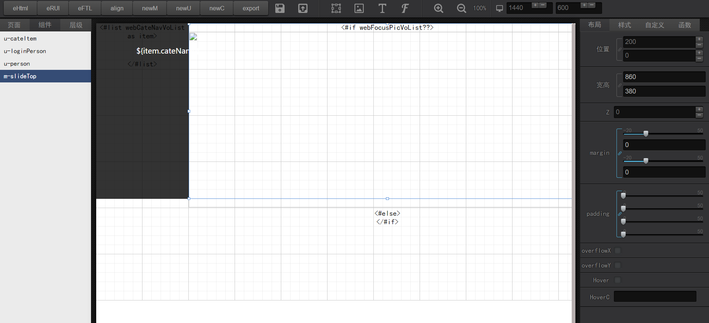
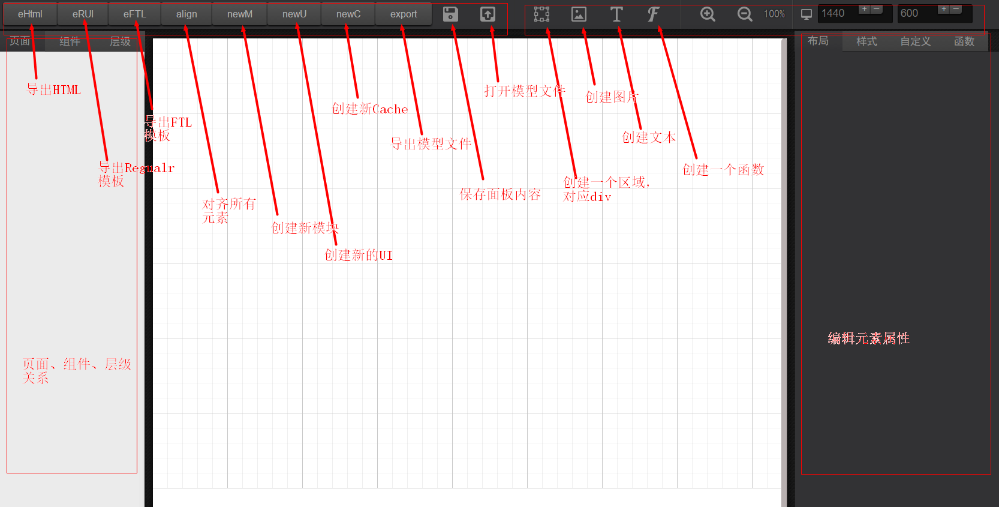

CMP 使用手册
主要介绍CMP项目的使用方法，方便使用。
CMP试用地址：https://chalecao.github.io/cmp/static/
界面如下：

CMP功能简单介绍：

本地使用
首先你需要安装cmp，由于cmp和linux 中cmp命令冲突，天噜啦！所以发布的包名改为cmps。执行以下命令：
npm install cmps -g
查看帮助：
cmps --help
常用命令：
//启动服务, 默认80端口，打开浏览器，打开cmp，后面的参数是开启http服务的目录地址
cmps ./cmp
//启动服务, 默认打开浏览器，打开cmp
cmps ./cmp -p 8088
//启动服务，不打开浏览器
cmps ./cmp -p 8088 -s false